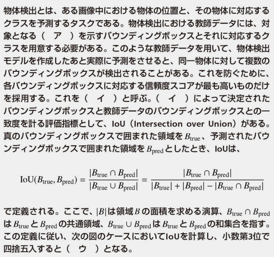
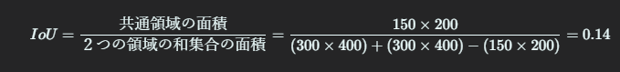
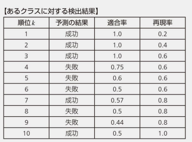
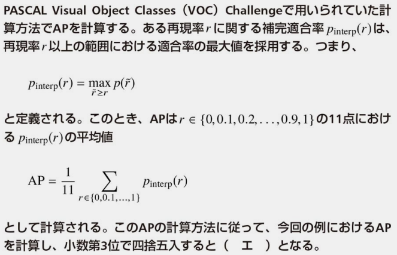
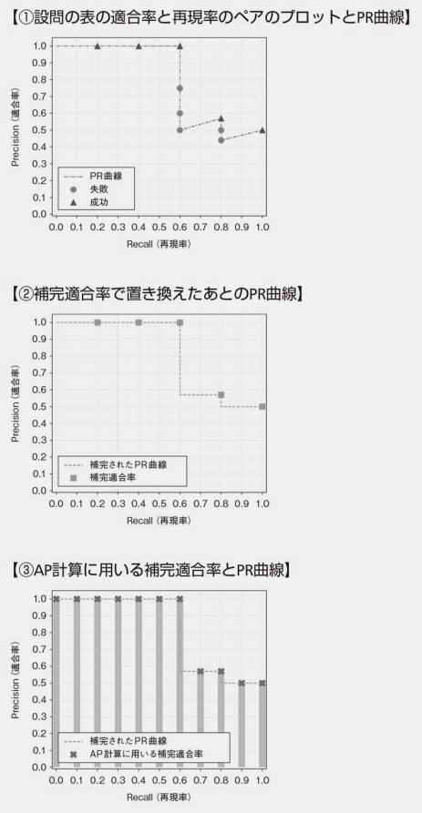
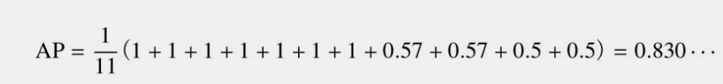
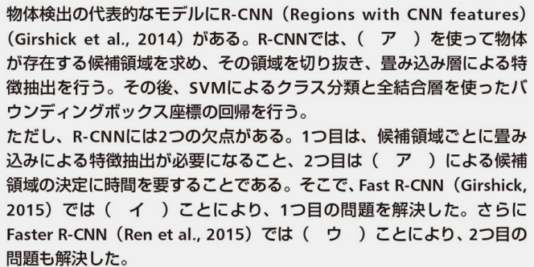
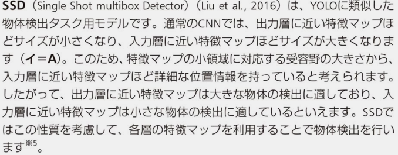
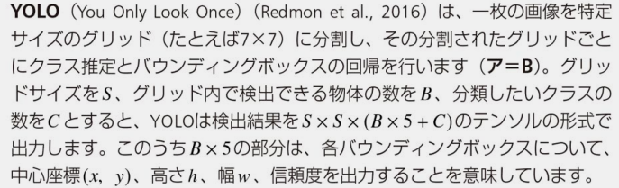

物体検出とは
ある画像中における
を予測する。
物体検出における教師データ
１つの物体に複数のバウンディングボックスが検出された場合に、バウンディングボックスを１つに限定する処理
IoU バウンディングボックスの一致度を測る指標
式
わかり易い図

（ウ）の計算

 正解はB
AP クラスの一致度を測る指標



（エ）の計算

◆問題

◆問題

正解は
SSD (Single Shot MultiBox Detector):
SSDは、物体検出（object detection）のためのコンピュータビジョンモデルです。SSDは、画像内の複数の物体を同時に検出し、それぞれの物体の位置とクラスを特定することができます。SSDは、リアルタイムの物体検出タスクに適しており、異なるサイズとアスペクト比の物体を効率的に検出できます。このモデルは、2つの主要なコンポーネントである物体位置の回帰とクラス分類を組み合わせて使用します。

YOLO (You Only Look Once):
YOLOも物体検出のためのモデルで、画像内の物体を同時に検出し、位置とクラスを特定します。YOLOは高速でリアルタイムの物体検出に優れており、単一のニューラルネットワークを使用して検出と分類を同時に行います。YOLOのアーキテクチャはバージョンごとに進化しており、YOLOv3、YOLOv4、YOLOv5などが存在します。

U-Net:
U-Netは、セマンティックセグメンテーション（semantic segmentation）と呼ばれるタスクのためのディープラーニングモデルです。セマンティックセグメンテーションは、画像内の各ピクセルを異なるクラス（物体や背景など）に割り当てるタスクです。U-Netは、エンコーダー（画像の特徴を抽出する部分）とデコーダー（特徴マップを元の解像度に戻す部分）から構成されるユニークなアーキテクチャを持っており、セグメンテーションタスクに適しています。
ResNet (Residual Neural Network):
ResNetは、ディープラーニングモデルのアーキテクチャであり、非常に深いニューラルネットワークを効果的に訓練するためのイノベーションを導入しました。通常、深いネットワークを訓練しようとすると、勾配消失問題が発生し、性能が低下しますが、ResNetは残差ブロック（residual block）と呼ばれる構造を使用してこの問題を解決しました。ResNetは、非常に深いネットワークで高い精度を実現し、画像認識などの多くのコンピュータビジョンタスクで広く使用されています。